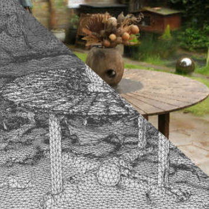
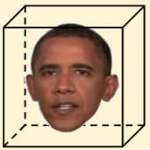
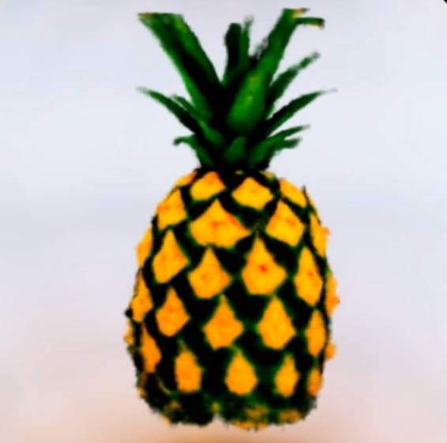
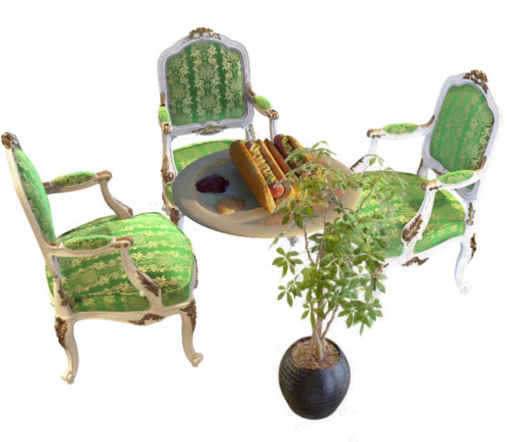
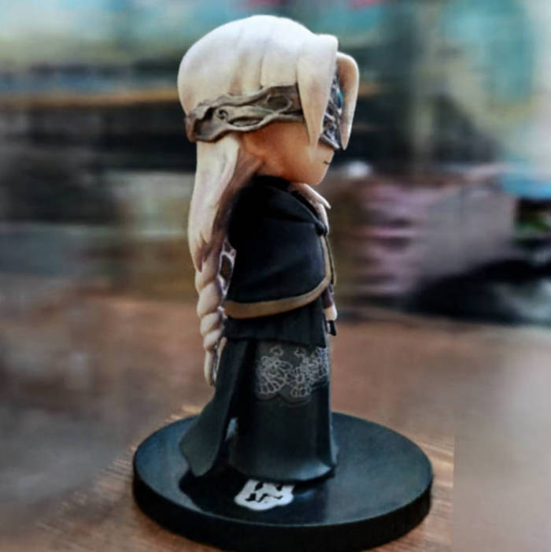
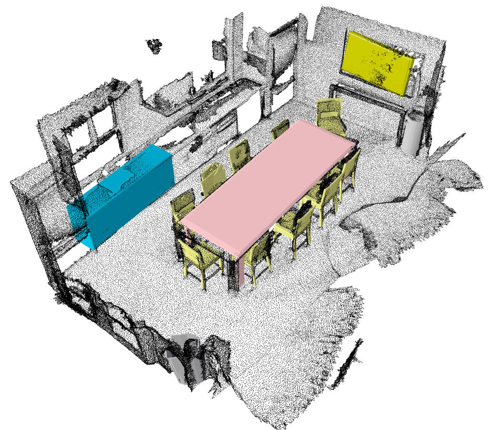
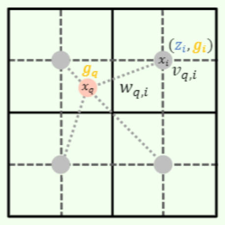
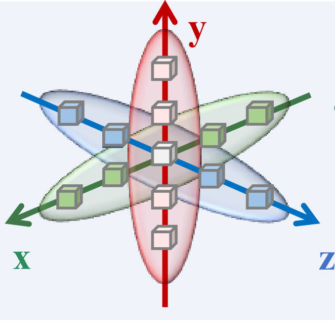

/ GitHub / Google Scholar / Homepage
I'm a third-year Ph.D. student at Peking University, under the supervision of Prof. Gang Zeng.
My research interest is in Computer Vision and Graphics, with a specialty in 3D reconstruction and modeling.
|  |
Delicate Textured Mesh Recovery from NeRF via Adaptive Surface Refinement Jiaxiang Tang, Hang Zhou, Xiaokang Chen, Tianshu Hu, Errui Ding, Jingdong Wang, Gang Zeng ICCV 2023 [ArXiv] [Code] [Project page] |
|||
|  |
Real-time Neural Radiance Talking Portrait Synthesis via Audio-spatial Decomposition Jiaxiang Tang, Kaisiyuan Wang, Hang Zhou, Xiaokang Chen, Dongliang He, Tianshu Hu, Jingtuo Liu, Gang Zeng, Jingdong Wang Arxiv 2022 [ArXiv] [Code] [Project page] |
|||
|  |
Stable-dreamfusion: Text-to-3D with Stable-diffusion Jiaxiang Tang Open-source Project [Github] |
|||
|  |
Compressible-composable NeRF via Rank-residual Decomposition Jiaxiang Tang, Xiaokang Chen, Jingbo Wang, Gang Zeng NeurIPS 2022 [ArXiv] [Code] [Project page] |
|||
|  |
Torch-ngp: a PyTorch implementation of instant-ngp Jiaxiang Tang Open-source Project [Github] |
|||
|  |
Point Scene Understanding via Disentangled Instance Mesh Reconstruction Jiaxiang Tang, Xiaokang Chen, Jingbo Wang, Gang Zeng ECCV 2022 [ArXiv] [Code] [Project page] |
|||
|  |
Joint Implicit Image Function for Guided Depth Super-Resolution Jiaxiang Tang, Xiaokang Chen, Gang Zeng ACM MM 2021 [ArXiv] [Code] |
|||
|  |
Not All Voxels Are Equal: Semantic Scene Completion from the Point-Voxel Perspective Jiaxiang Tang*, Xiaokang Chen*, Jingbo Wang*, Gang Zeng AAAI 2022 [ArXiv] |
|||
| [2022.07-Now] | Research Intern at Baidu Inc., directed by Dr. Hang Zhou. |
| [2022 Spring] | Teaching Assistant of "Design and Analysis of Computer Algorithms", Peking University |
| [2020 Autumn] | Teaching Assistant of "Introduction to Computing (B)", Peking University |
| [2020 Spring] | Teaching Assistant of "Design and Analysis of Computer Algorithms", Peking University |
I was born in Shandong, China.
During 2016-2020, I'm fortunate to spend my undergraduate days in the School of Life Sciences at Peking University.
I started to double-major in Computer Science in 2017, and found myself enjoying coding more.
After that, I joined the Key Laboratory of Perception (MoE), School of AI, as a Ph.D. student from 2020.
I love the process of implementing something (maybe anything).
Apart from coding, I am also passionate about animes, comics, games and (mainly sci-fi) novels.
I have finished both Divinity: Original Sin 1 and 2 in tactician mode.
My favorite book series are Tales of Tarsylia.